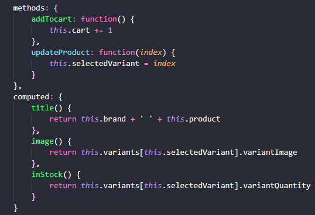
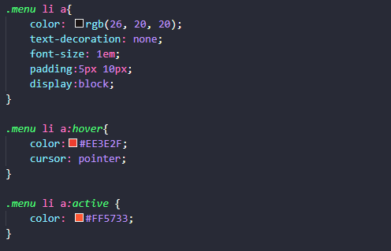
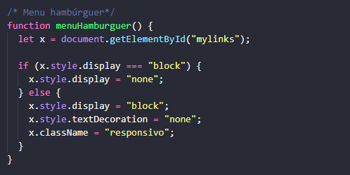

"Will code for... fun!"
Nem sempre eu finalizo os projetos que começo. Muitos deles são pequenas partes
de algo maior, que eu faço apenas para aprender ou praticar uma habilidade específica.
Outros são pequenos programas que eu faço para praticar programação, além de outros
que eu simplesmente abandono porque encontrei algo novo que me chame a atenção.
Como ainda são projetos para mim mesma e não preciso prestar contas a ninguém,
por enquanto eu tenho considerado que a flexibilidade é mais lucrativa que a persistência.

Linguagem de marcação é amor
Claro que os frameworks são otimizadores, e concordo que as linguagens de programação são mais
poderosas e complexas, mas a dupla HTML e CSS temperada com Vanilla JS
sempre exerceu uma atração sobre mim.
Frameworks veem e vão, mas a essência permanece.

Seu código, sua cara
Acredito que dá para inferir muito sobre uma pessoa só de olhar para os seus códigos.
Nada como olhar para um código legível e organizado e ver que a pessoa ao menos se importa
com isso. Nem sempre é possível fazer a indentação dos sonhos, mas um pouco de esforço e
algumas extensões já ajudam bastante.

"